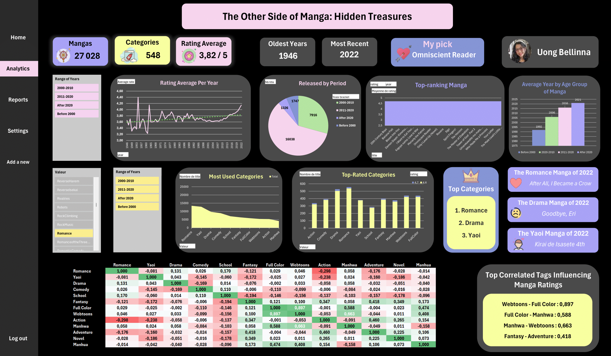
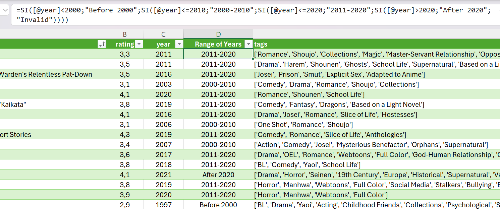
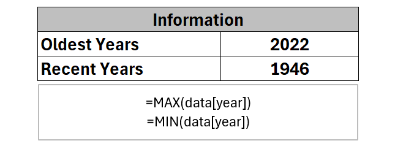
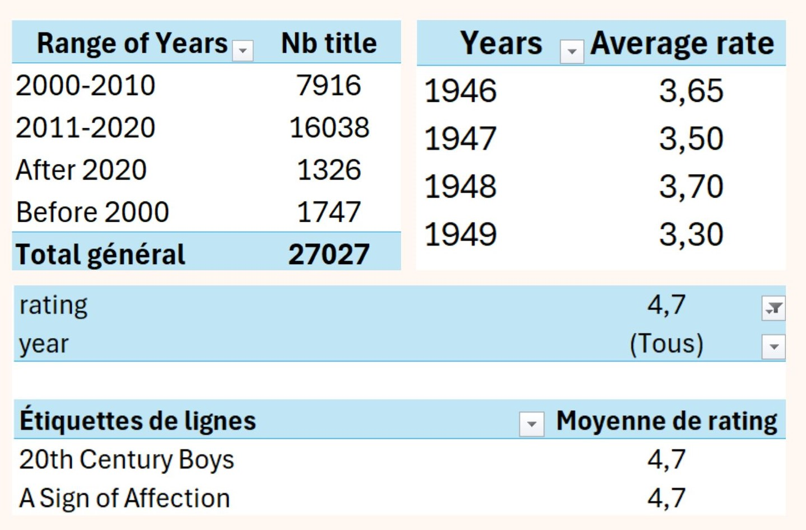
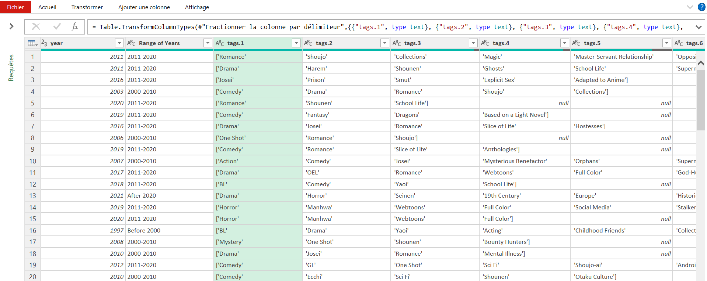
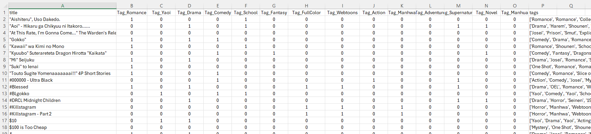
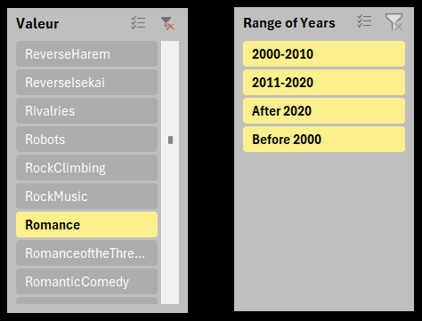
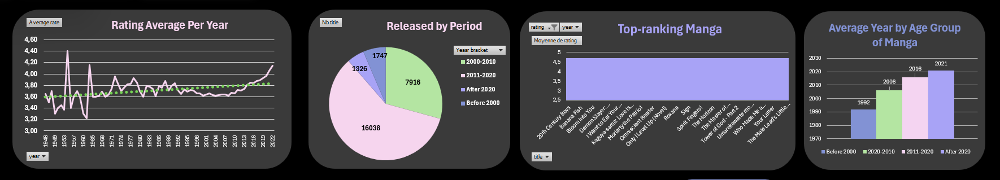
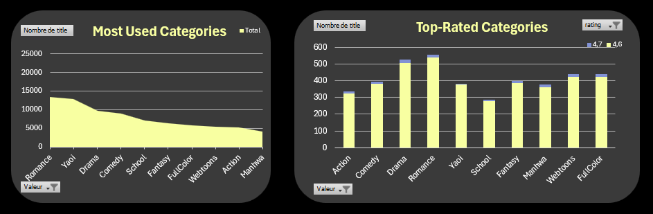
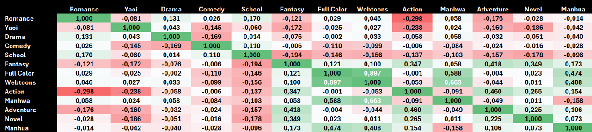

The manga industry has experienced significant growth over the years,
with new titles being published and readership expanding globally. As
someone passionate about both data analysis and manga, I wanted to explore
how data can reveal key insights about this industry.
The manga industry has seen significant growth over the years, with new titles
captivating audiences worldwide. However, many of the most well-known and
long-running mangas are reaching their conclusions, such as One Piece and
Attack on Titan.
The goal is to identify potential future leaders in the industry based
on historical patterns and current data.

Skill
Data Analysis
Data Visualization
Data Cleaning
Excel
Power Query
What factors influence the success of a manga?
Ojective
The primary objective of this project was to
use data to uncover trends and insights that
could help predict which mangas might become
the next big success stories.
Specifically, I focused on understanding how manga
ratings have changed over time, identifying the most
popular genres, and analyzing the correlation between
different categories to find patterns in manga content.
The dataset
The data used for this project was sourced
from Kaggle, a well-known platform for datasets
and data science competitions.
The dataset consists of 70 939 manga, their synospis,
each accompanied by a rating on a 5-point scale, the
year of release, and associated categories. The dataset
provides a comprehensive view of both quantitative aspects
(ratings and release years) and qualitative characteristics
(categories).
Data preparation
There were many mangas missing key information such
as their release date or rating. So, I began by cleaning
the data, removing mangas that had no ratings or categories.
For the remaining mangas without a release year, if the information
was not easily accessible, I removed them as well. Since the number
was small, I manually added the missing years. I also removed any
duplicates that existed in the dataset. As a result, the dataset
was reduced from 70,393 mangas to 27,028.
Categories that are almost identical were grouped into a single
category (e.g., BL = Yaoi).

I began my analysis by creating a new column to categorize mangas
into specific year ranges (e.g 2011-2020 or Before 2000) using
the IF formula in Excel.

To determine the number of mangas within each year range,
I utilized the COUNTA formula.
Additionally, I employed the MAX and MIN formulas to identify
the oldest and most recent publication years in the dataset.
I created pivot tables to analyze the data in several ways. I
compared average ratings across each year, which allowed me to
determine the overall average rating.
I also analyzed average ratings by category, as well as average
ratings within specific year ranges.
Additionally, I created a pivot table to show the number of mangas per year range.
To enhance interactivity, I set up charts linked to a segment, which enabled users
to control the year range across all visualizations simultaneously.

Since manga categories were originally listed in a single cell
for each manga, I used Power Query to transform this categorical
data into individual rows, ensuring that each category was represented
separately.
This transformation allowed me to generate additional pivot
tables analyzing the relationship between categories and manga counts,
as well as categories and their respective ratings.

I constructed a correlation matrix to understand
the relationships between categories and ratings.
I sampled 1086 mangas and added binary columns for
the top 14 categories. Using the CORREL function, I
calculated the correlation coefficients and applied
conditional formatting to visually represent these correlations,
making it easier to interpret the strength and direction of the
relationships between categories.


The dashboard features segments that allow users
to focus on specific year ranges or categories. This
functionality enables users to isolate particular time
periods or genres, facilitating a more detailed analysis
of trends and patterns
Charts and Key Insights
The average manga ratings are quite unstable before
1980. However, from 1980 until 2022, we see a clear
upward trend. The trendline suggests that this increase
could continue in the future.
In the dataset, the majority of manga are concentrated in
the year ranges between 2011-2020 and 2000-2010. Additionally,
the average release year for manga in these ranges is 2006 and
2016, respectively.

The most frequently used categories, which also have the highest-rated
manga (with average ratings between 4.6 and 4.7), include Romance, Yaoi—where
half of the manga are categorized—Drama, Comedy, School, Fantasy, Full Color,
Webtoons, Action, and Manhwa. The latter categories represent about a quarter
of the dataset. It is worth noting that very few manga have ratings above 4.6 out of 5.

The correlation table reveals certain categories that appear frequently together and have strong
correlations, such as Webtoons and Full Color, with a correlation coefficient of 0.897. On the
other hand, some combinations, like Romance and Action, show very low correlation, with a coefficient
of -0.298. Most categories, however, tend to be relatively independent of one another.

Interpretation
The instability of average manga ratings before 1980
likely reflects the smaller number of mangas released during
that period, making it difficult to draw consistent conclusions.
The upward trend in ratings from 1980 onwards suggests either an
improvement in manga quality over time or changes in audience
preferences that have resulted in higher ratings. The trendline further
suggests that, if these patterns continue, we could expect average
ratings to keep rising in the future.
The concentration of manga releases in the 2000-2020 range indicates a
period of rapid growth in the industry, possibly due to the global
popularity of manga and the rise of digital platforms. The average
release years of 2006 and 2016 highlight key periods of manga production,
aligning with significant developments in publishing and distribution.
Categories such as Romance, Yaoi, Drama, and others not only dominate the
dataset in terms of the number of mangas but also show a tendency to
have higher ratings. This suggests that these genres may appeal more
to the audience or attract better-quality works. Conversely, the rarity of mangas
with ratings above 4.6 indicates that
exceptional ratings are hard to achieve, which may reflect stricter
reader standards or the challenges of producing universally acclaimed works.
The strong correlations, particularly between Webtoons and Full Color, Full Color
and Manhwa, Manhwa and Webtoons, as well as Fantasy and Adventure, suggest that these
categories frequently co-occur in the dataset. This likely reflects the specific style
and format associated with these categories. For instance, many Webtoons are both in
full color and originate from South Korea (Manhwa), while Fantasy and Adventure are
genres that often share similar narrative elements, making their frequent pairing
unsurprising. The general independence of most other categories indicates that manga
genres tend to stand alone, catering to distinct audience preferences.
Summary of discoveries
In summary, the analysis of manga data reveals several key trends.
First, the instability in ratings prior to 1980 contrasts sharply with
the steady increase in ratings from 1980 onward, suggesting a shift in
either manga quality or audience preferences. The concentration of manga
releases between 2000 and 2020 highlights a boom in the industry, driven
in part by digital platforms. Popular categories like Romance, Yaoi, Drama,
and Comedy not only dominate in numbers but also tend to have higher ratings,
indicating a strong audience appeal. However, very few mangas surpass a rating
of 4.6, reflecting the challenge of achieving exceptional ratings.
The correlation analysis reveals strong connections between certain categories,
especially Webtoons, Full Color, Manhwa, Fantasy, and Adventure, which frequently
appear together. This suggests that certain formats and genres naturally complement
each other, driving higher reader engagement.
Recommendation
Based on these findings, future analysis could explore the influence of individual
authors, publishers, or studios on manga success. Additionally, investigating the
role of digital distribution and international readership could provide deeper
insights into the global expansion of the industry. Lastly, conducting sentiment
analysis on user reviews might offer more nuanced explanations behind the ratings,
helping to identify specific factors that drive higher reader satisfaction.
Personal Learnings
This project has deepened my understanding of data analysis and its practical application
in exploring trends within a specific industry like manga. I have enhanced my skills
in data cleaning and transformation, particularly using Power Query to handle complex
categorical data.
Through this project, I have also improved my ability to visualize data effectively,
making insights more accessible and understandable through clear charts and tables.
I learned how to set up and utilize segments to focus on specific years or categories,
which greatly enhanced my analytical capabilities. Understanding how to apply these
segments allowed me to dissect data more effectively, providing clearer insights into
trends and patterns within targeted subsets of the data.